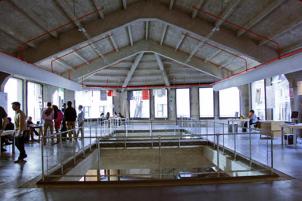

La planta 1 de la nave Alameda está dividida en dos espacios: el Lab 1 en el lado Sur, orientado hacia Atocha, que ocupa la mayor parte de la planta; y los Minilabs A y B en el lado Norte, orientados hacia la Plaza de las Letras. Ambos espacios están separados por un pasillo distribuidor.
Si accedemos desde La Cosa, tendríamos que subir por esta escalera al rellano del primer piso, ascender una pequeña rampa y doblar a la izquierda hasta llegar a una puerta de cristal de apertura automática que desemboca en el pasillo distribuidor. Avanzando por éste hacia los ventanales que dan la calle Alameda, dejamos a nuestra derecha, en este orden, el Minilab A, el ascensor y el Minilab B; y a nuestra izquierda, la pared de malla metálica que da al Lab 1. Al fondo del Lab 1, en la esquina derecha, encontramos otra escalera que conecta con el Lab 0, situado una planta más abajo.
⇧ Volver arriba
Los Minilabs A y B son dos salas simétricas utilizadas para reuniones o talleres que requieran cierto aislamiento acústico. Son salas rectangulares cerradas, de 4 metros de ancho y 9 de fondo. Entre ellas encontramos la estructura de madera que contiene el ascensor, similar a las que hay en el resto de plantas de Medialab.
Los Minilabs están separados del pasillo distribuidor por un cerramiento de cristal, donde se abren las puertas de acceso a cada uno. Al entrar, tenemos frente a nosotras el muro de hormigón que da a la Plaza de las Letras, sin ventanas, ya que sostiene por el exterior la fachada digital. La pared derecha del Minilab A tiene un gran ventanal de suelo a techo que mira al patio; la de la izquierda es la pared de la estructura de madera. Mientras que en el Minilab B, la pared de la izquierda tiene cuatro ventanales que dan a la calle Alameda y la de la derecha es la de la estructura de madera. Ambos Minilabs tienen mesas de trabajo con sillas, un proyector colgado del techo y una pantalla.
Tanto los Minilabs como el pasillo distribuidor tienen el techo de hormigón plano, con vigas, ya que justo encima están situadas las residencias y el Minilab C. El cableado, el sistema anti-incendio y el de climatización están a la vista, como en el resto del edificio, y el suelo es también de hormigón pulido de color negro.
⇧ Volver arriba
El Lab 1 es una enorme sala diáfana, un espacio de trabajo polivalente con mesas y sillas, de unos 26 metros de largo por 13 de ancho. Es prácticamente rectangular, excepto el tramo del fondo, que cierra en chaflán formando un polígono, donde se sitúa la escalera de hierro que baja al Lab 0.
El suelo del Lab 1 se abre al nivel inferior mediante dos grandes huecos rectangulares en el forjado, de 5 metros de largo por 4 de ancho cada uno, separados entre sí por una estrecha pasarela. Están ubicados uno detrás del otro centrados a lo largo de la nave y paralelos a las paredes, dando sus lados largos a la calle Alameda y al Patio respectivamente. A su alrededor, hay una barandilla de hierro gris con malla metálica que circunda el espacio vacío. Si nos asomamos, podemos ver el Lab 0 y la sala de exposiciones, percibiendo la mezcla de sonidos de las dos plantas.
La idea de amplitud de la nave se acentúa en esta planta, al estar separado el Lab 1 del pasillo distribuidor por una sencilla pared de malla metálica. Las otras tres paredes son de hormigón, con grandes ventanales que dejan entrar mucha luz, a través de los cuales se ven la calle Alameda, el Patio y el hotel. Todas estas ventanas tienen una doble estructura de persianas, una negra que filtra la luz del sol y otra blanca que es una pantalla, de modo que la gente pueda distribuirse en grupos y proyectar sobre cualquiera de ellas.
Sobre el Lab 1 se encuentra el tejado del edificio, ya que la última planta solo ocupa una parte de la nave. Aquí la cubierta es a dos aguas, alcanzando una altura máxima en el punto central de más de 6 metros. Es una techumbre curiosa que imita en hormigón la forma típica de los tejados de madera, con vigas transversales gruesas en forma de V, apoyando en los pilares laterales, y otras más finas dispuestas de Norte a Sur. En la parte Sur, para cerrar el remate poligonal de la planta, el techo forma cuatro paños triangulares inclinados.
⇧ Volver arriba
⇦ Anterior: Nave Alameda - Planta 0
⇨ Siguiente: Nave Alameda - Planta 2